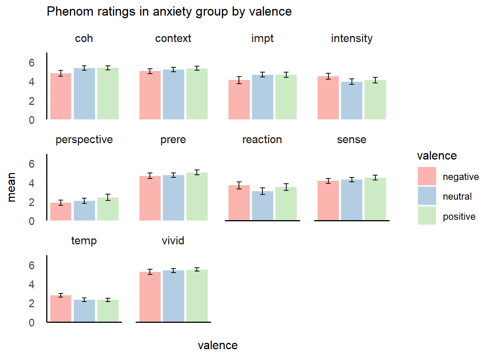
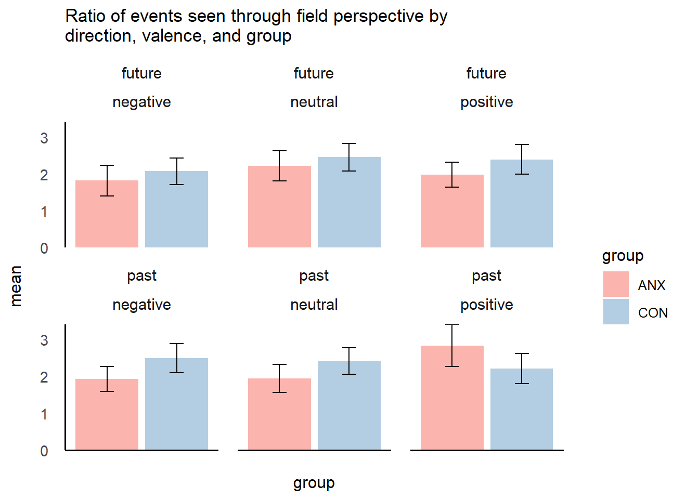
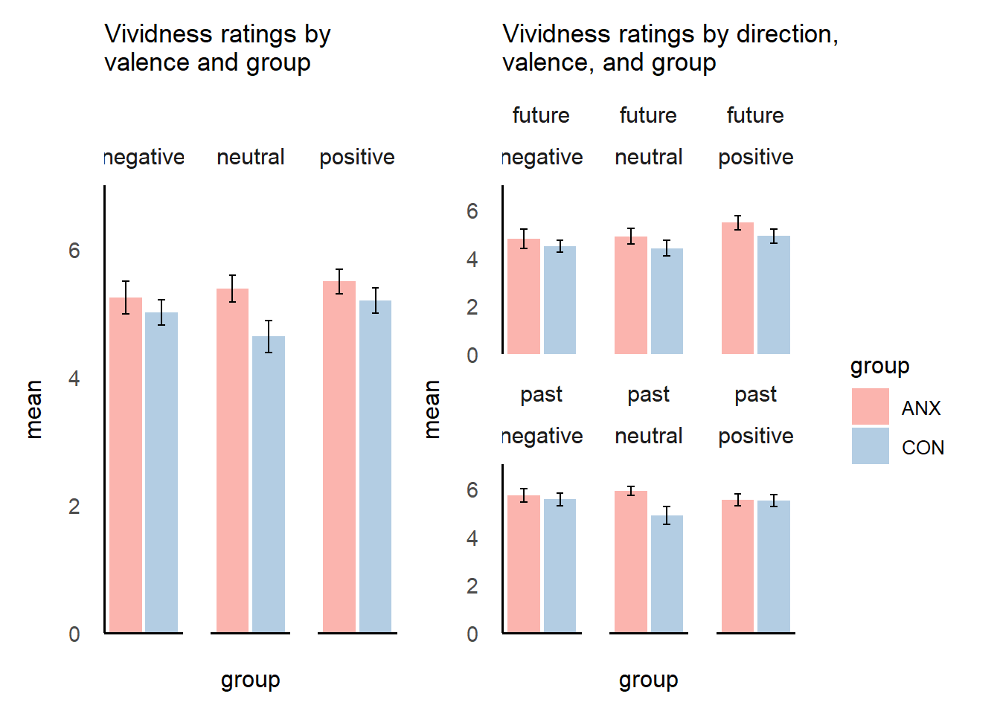
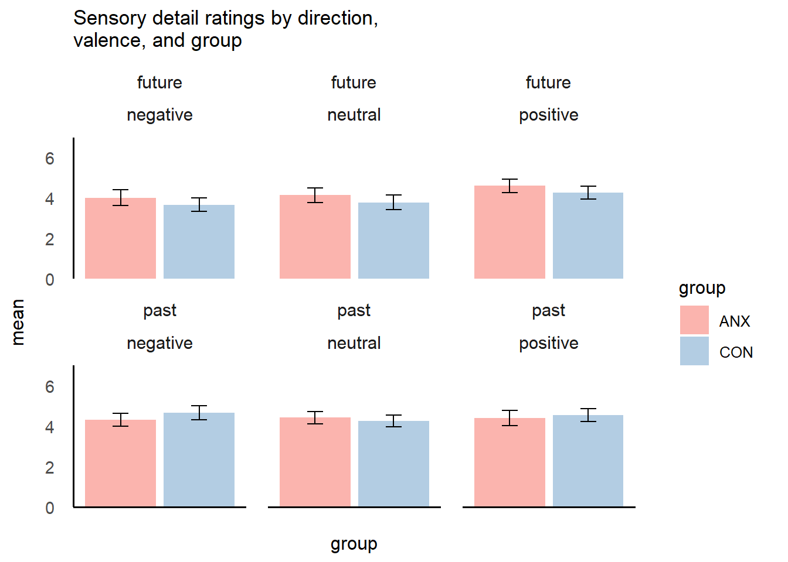

Last updated: 2020-11-08
Checks: 7 0
Knit directory: sakiko_project/
This reproducible R Markdown analysis was created with workflowr (version 1.6.2). The Checks tab describes the reproducibility checks that were applied when the results were created. The Past versions tab lists the development history.
Great! Since the R Markdown file has been committed to the Git repository, you know the exact version of the code that produced these results.
Great job! The global environment was empty. Objects defined in the global environment can affect the analysis in your R Markdown file in unknown ways. For reproduciblity it’s best to always run the code in an empty environment.
The command set.seed(20200910) was run prior to running the code in the R Markdown file. Setting a seed ensures that any results that rely on randomness, e.g. subsampling or permutations, are reproducible.
Great job! Recording the operating system, R version, and package versions is critical for reproducibility.
Nice! There were no cached chunks for this analysis, so you can be confident that you successfully produced the results during this run.
Great job! Using relative paths to the files within your workflowr project makes it easier to run your code on other machines.
Great! You are using Git for version control. Tracking code development and connecting the code version to the results is critical for reproducibility.
The results in this page were generated with repository version d4254e3. See the Past versions tab to see a history of the changes made to the R Markdown and HTML files.
Note that you need to be careful to ensure that all relevant files for the analysis have been committed to Git prior to generating the results (you can use wflow_publish or wflow_git_commit). workflowr only checks the R Markdown file, but you know if there are other scripts or data files that it depends on. Below is the status of the Git repository when the results were generated:
Ignored files:
Ignored: .Rhistory
Ignored: .Rproj.user/
Note that any generated files, e.g. HTML, png, CSS, etc., are not included in this status report because it is ok for generated content to have uncommitted changes.
These are the previous versions of the repository in which changes were made to the R Markdown (analysis/coding6.Rmd) and HTML (docs/coding6.html) files. If you’ve configured a remote Git repository (see ?wflow_git_remote), click on the hyperlinks in the table below to view the files as they were in that past version.
| File | Version | Author | Date | Message |
|---|---|---|---|---|
| Rmd | d4254e3 | Sakiko Okayama | 2020-11-08 | Week 8 blog and coding6 complete |
| html | 17c9890 | Sakiko Okayama | 2020-11-02 | Build site. |
| Rmd | 31fa18b | Sakiko Okayama | 2020-11-02 | blog 7 complete and coding6 progress |
| html | 245fcf1 | Your Name | 2020-10-29 | jenny adding coding 8 |
| Rmd | b161405 | Your Name | 2020-10-20 | adding coding 6 phenom |
| html | b161405 | Your Name | 2020-10-20 | adding coding 6 phenom |
| Rmd | d8576ef | Your Name | 2020-10-16 | update links |
library(tidyverse)
library(here)
library(ggeasy)
library(ggbeeswarm)
library(RColorBrewer)
library(papaja)
library(patchwork)phenom <- read_csv(here("data", "study3_phenom_ratings.csv"))Some pp were excluded due to english skills, age, or not completing the experiment
filter_phenom <- phenom %>%
filter(identifier == "Good")Use glimpse() or names() or str() to get an idea what is included in the dataset
str(filter_phenom)tibble [34 x 173] (S3: spec_tbl_df/tbl_df/tbl/data.frame)
$ px_no : chr [1:34] "p_1001" "p_1003" "p_1014" "p_1017" ...
$ identifier : chr [1:34] "Good" "Good" "Good" "Good" ...
$ group : chr [1:34] "ANX" "ANX" "ANX" "ANX" ...
$ age : num [1:34] 29 33 28 50 32 60 54 57 53 29 ...
$ gender : chr [1:34] "Female" "Female" "Female" "Male" ...
$ past_neutral_e1_vivid : num [1:34] 5 6 5 6 5 7 7 6 7 5 ...
$ past_neutral_e1_prere : num [1:34] 5 2 4 4 5 4 6 6 6 6 ...
$ past_neutral_e1_sense1 : num [1:34] 4 6 5 4 5 7 6 4 6 3 ...
$ past_neutral_e1_sense2 : num [1:34] 1 1 6 2 5 1 5 4 1 4 ...
$ past_neutral_e1_context1 : num [1:34] 4 6 5 3 5 7 6 5 3 6 ...
$ past_neutral_e1_context2 : num [1:34] 5 6 7 5 5 7 6 6 7 5 ...
$ past_neutral_e1_perspective1 : num [1:34] 7 6 6 6 5 7 6 5 7 6 ...
$ past_neutral_e1_perspective2 : num [1:34] 1 1 3 2 5 6 6 5 7 5 ...
$ past_neutral_e1_ratio : num [1:34] 7 6 2 3 1 ...
$ past_neutral_e1_intensity : num [1:34] 4 2 4 3 5 4 6 5 4 5 ...
$ past_neutral_e1_reaction : num [1:34] 3 1 7 3 5 5 6 1 1 3 ...
$ past_neutral_e1_impt : num [1:34] 3 7 6 1 5 7 6 6 7 5 ...
$ past_neutral_e1_coh : num [1:34] 2 6 6 5 5 7 6 6 7 6 ...
$ past_neutral_e1_temp : num [1:34] 4 2 4 3 2 NA 1 4 4 2 ...
$ past_neutral_e2_vivid : num [1:34] 6 6 6 6 6 7 6 5 7 7 ...
$ past_neutral_e2_prere : num [1:34] 5 6 4 5 6 4 6 6 7 7 ...
$ past_neutral_e2_sense1 : num [1:34] 5 6 5 6 6 7 6 5 7 7 ...
$ past_neutral_e2_sense2 : num [1:34] 1 1 5 5 6 1 6 5 1 6 ...
$ past_neutral_e2_context1 : num [1:34] 4 6 6 5 6 7 6 5 7 7 ...
$ past_neutral_e2_context2 : num [1:34] 4 6 6 6 6 7 5 6 7 6 ...
$ past_neutral_e2_perspective1 : num [1:34] 1 6 5 5 6 7 6 6 7 6 ...
$ past_neutral_e2_perspective2 : num [1:34] 7 1 2 2 6 7 6 6 7 6 ...
$ past_neutral_e2_ratio : num [1:34] 0.143 6 2.5 2.5 1 ...
$ past_neutral_e2_intensity : num [1:34] 5 1 5 5 6 7 7 5 5 5 ...
$ past_neutral_e2_reaction : num [1:34] 5 1 1 6 7 3 6 1 5 3 ...
$ past_neutral_e2_impt : num [1:34] 5 6 4 7 6 3 6 5 7 2 ...
$ past_neutral_e2_coh : num [1:34] 6 6 6 6 6 7 7 5 7 5 ...
$ past_neutral_e2_temp : num [1:34] 4 2 4 4 1 1 4 4 3 1 ...
$ past_negative_e1_vivid : num [1:34] 5 3 6 6 6 7 6 5 7 5 ...
$ past_negative_e1_prere : num [1:34] 5 2 6 6 6 3 6 5 7 5 ...
$ past_negative_e1_sense1 : num [1:34] 5 2 6 7 6 7 4 5 6 4 ...
$ past_negative_e1_sense2 : num [1:34] 3 1 3 2 6 1 4 4 1 4 ...
$ past_negative_e1_context1 : num [1:34] 5 2 4 6 6 7 3 5 7 4 ...
$ past_negative_e1_context2 : num [1:34] 5 5 6 6 6 7 5 4 7 5 ...
$ past_negative_e1_perspective1 : num [1:34] 5 4 6 6 6 7 5 5 7 6 ...
$ past_negative_e1_perspective2 : num [1:34] 3 1 1 5 6 7 5 4 7 5 ...
$ past_negative_e1_ratio : num [1:34] 1.67 4 6 1.2 1 ...
$ past_negative_e1_intensity : num [1:34] 3 1 5 4 6 7 5 5 6 6 ...
$ past_negative_e1_reaction : num [1:34] 3 1 1 5 6 3 5 1 6 5 ...
$ past_negative_e1_impt : num [1:34] 3 2 4 6 6 7 5 5 7 5 ...
$ past_negative_e1_coh : num [1:34] 2 2 6 6 6 7 5 5 7 5 ...
$ past_negative_e1_temp : num [1:34] 3 4 3 4 4 4 4 1 2 4 ...
$ past_negative_e2_vivid : num [1:34] 6 4 7 6 5 7 6 5 7 6 ...
$ past_negative_e2_prere : num [1:34] 6 2 6 6 5 5 6 5 6 6 ...
$ past_negative_e2_sense1 : num [1:34] 6 2 6 6 5 7 5 5 7 6 ...
$ past_negative_e2_sense2 : num [1:34] 3 1 2 2 5 1 6 6 1 5 ...
$ past_negative_e2_context1 : num [1:34] 5 2 2 6 5 4 6 5 7 6 ...
$ past_negative_e2_context2 : num [1:34] 6 2 5 7 5 7 6 6 7 5 ...
$ past_negative_e2_perspective1 : num [1:34] 5 2 6 7 5 7 6 5 7 6 ...
$ past_negative_e2_perspective2 : num [1:34] 3 1 2 4 5 2 6 5 6 4 ...
$ past_negative_e2_ratio : num [1:34] 1.67 2 3 1.75 1 ...
$ past_negative_e2_intensity : num [1:34] 6 1 6 5 5 7 6 5 7 4 ...
$ past_negative_e2_reaction : num [1:34] 4 1 4 5 6 7 5 1 6 2 ...
$ past_negative_e2_impt : num [1:34] 5 1 3 2 6 7 6 5 7 1 ...
$ past_negative_e2_coh : num [1:34] 5 2 6 3 5 7 6 5 7 5 ...
$ past_negative_e2_temp : num [1:34] 4 4 4 3 4 4 4 4 3 3 ...
$ past_positive_e1_vivid : num [1:34] 6 5 6 3 6 7 6 5 7 6 ...
$ past_positive_e1_prere : num [1:34] 6 2 6 2 6 4 6 6 7 6 ...
$ past_positive_e1_sense1 : num [1:34] 6 5 5 5 6 7 6 6 7 7 ...
$ past_positive_e1_sense2 : num [1:34] 3 1 3 1 6 1 6 6 1 5 ...
$ past_positive_e1_context1 : num [1:34] 6 2 6 5 6 7 6 6 7 7 ...
$ past_positive_e1_context2 : num [1:34] 6 3 6 6 6 7 6 7 7 7 ...
$ past_positive_e1_perspective1 : num [1:34] 6 4 6 5 6 7 6 6 7 7 ...
$ past_positive_e1_perspective2 : num [1:34] 1 1 2 2 6 2 6 6 1 7 ...
$ past_positive_e1_ratio : num [1:34] 6 4 3 2.5 1 3.5 1 1 7 1 ...
$ past_positive_e1_intensity : num [1:34] 5 2 6 4 6 4 6 6 7 6 ...
$ past_positive_e1_reaction : num [1:34] 5 1 5 6 6 3 6 1 4 5 ...
$ past_positive_e1_impt : num [1:34] 5 4 6 6 6 7 6 6 7 7 ...
$ past_positive_e1_coh : num [1:34] 6 4 5 5 5 7 6 5 7 7 ...
$ past_positive_e1_temp : num [1:34] 2 1 4 4 3 2 4 4 1 3 ...
$ past_positive_e2_vivid : num [1:34] 5 5 5 6 5 5 6 4 7 7 ...
$ past_positive_e2_prere : num [1:34] 5 3 4 5 5 2 6 5 7 6 ...
$ past_positive_e2_sense1 : num [1:34] 5 4 3 5 5 4 6 5 7 6 ...
$ past_positive_e2_sense2 : num [1:34] 4 1 2 2 5 1 6 5 3 7 ...
$ past_positive_e2_context1 : num [1:34] 3 4 3 6 4 3 6 5 7 7 ...
$ past_positive_e2_context2 : num [1:34] 5 6 6 6 4 7 6 5 7 7 ...
$ past_positive_e2_perspective1 : num [1:34] 5 6 6 6 5 7 6 5 7 7 ...
$ past_positive_e2_perspective2 : num [1:34] 1 1 2 3 5 1 5 5 1 5 ...
$ past_positive_e2_ratio : num [1:34] 5 6 3 2 1 7 1.2 1 7 1.4 ...
$ past_positive_e2_intensity : num [1:34] 2 1 4 4 5 2 6 5 3 2 ...
$ past_positive_e2_reaction : num [1:34] 2 1 1 2 5 2 6 1 1 1 ...
$ past_positive_e2_impt : num [1:34] 2 3 4 6 6 1 7 6 7 1 ...
$ past_positive_e2_coh : num [1:34] 4 6 4 4 5 7 7 5 7 3 ...
$ past_positive_e2_temp : num [1:34] 1 1 4 4 2 3 2 NA 1 1 ...
$ future_neutral_e1_vivid : num [1:34] 2 3 4 5 5 7 5 5 7 6 ...
$ future_neutral_e1_prere : num [1:34] 4 3 4 3 5 1 4 2 7 6 ...
$ future_neutral_e1_sense1 : num [1:34] 4 1 5 5 6 7 3 5 7 7 ...
$ future_neutral_e1_sense2 : num [1:34] 1 1 5 2 5 1 4 2 6 5 ...
$ future_neutral_e1_context1 : num [1:34] 2 2 4 2 6 3 5 5 5 6 ...
$ future_neutral_e1_context2 : num [1:34] 4 1 3 4 6 7 5 4 7 7 ...
$ future_neutral_e1_perspective1 : num [1:34] 6 6 4 5 6 4 5 5 7 7 ...
$ future_neutral_e1_perspective2 : num [1:34] 2 1 1 3 5 2 5 5 7 7 ...
$ future_neutral_e1_ratio : num [1:34] 3 6 4 1.67 NA ...
$ future_neutral_e1_intensity : num [1:34] 2 1 3 5 6 2 6 6 4 5 ...
[list output truncated]
- attr(*, "spec")=
.. cols(
.. px_no = col_character(),
.. identifier = col_character(),
.. group = col_character(),
.. age = col_double(),
.. gender = col_character(),
.. past_neutral_e1_vivid = col_double(),
.. past_neutral_e1_prere = col_double(),
.. past_neutral_e1_sense1 = col_double(),
.. past_neutral_e1_sense2 = col_double(),
.. past_neutral_e1_context1 = col_double(),
.. past_neutral_e1_context2 = col_double(),
.. past_neutral_e1_perspective1 = col_double(),
.. past_neutral_e1_perspective2 = col_double(),
.. past_neutral_e1_ratio = col_double(),
.. past_neutral_e1_intensity = col_double(),
.. past_neutral_e1_reaction = col_double(),
.. past_neutral_e1_impt = col_double(),
.. past_neutral_e1_coh = col_double(),
.. past_neutral_e1_temp = col_double(),
.. past_neutral_e2_vivid = col_double(),
.. past_neutral_e2_prere = col_double(),
.. past_neutral_e2_sense1 = col_double(),
.. past_neutral_e2_sense2 = col_double(),
.. past_neutral_e2_context1 = col_double(),
.. past_neutral_e2_context2 = col_double(),
.. past_neutral_e2_perspective1 = col_double(),
.. past_neutral_e2_perspective2 = col_double(),
.. past_neutral_e2_ratio = col_double(),
.. past_neutral_e2_intensity = col_double(),
.. past_neutral_e2_reaction = col_double(),
.. past_neutral_e2_impt = col_double(),
.. past_neutral_e2_coh = col_double(),
.. past_neutral_e2_temp = col_double(),
.. past_negative_e1_vivid = col_double(),
.. past_negative_e1_prere = col_double(),
.. past_negative_e1_sense1 = col_double(),
.. past_negative_e1_sense2 = col_double(),
.. past_negative_e1_context1 = col_double(),
.. past_negative_e1_context2 = col_double(),
.. past_negative_e1_perspective1 = col_double(),
.. past_negative_e1_perspective2 = col_double(),
.. past_negative_e1_ratio = col_double(),
.. past_negative_e1_intensity = col_double(),
.. past_negative_e1_reaction = col_double(),
.. past_negative_e1_impt = col_double(),
.. past_negative_e1_coh = col_double(),
.. past_negative_e1_temp = col_double(),
.. past_negative_e2_vivid = col_double(),
.. past_negative_e2_prere = col_double(),
.. past_negative_e2_sense1 = col_double(),
.. past_negative_e2_sense2 = col_double(),
.. past_negative_e2_context1 = col_double(),
.. past_negative_e2_context2 = col_double(),
.. past_negative_e2_perspective1 = col_double(),
.. past_negative_e2_perspective2 = col_double(),
.. past_negative_e2_ratio = col_double(),
.. past_negative_e2_intensity = col_double(),
.. past_negative_e2_reaction = col_double(),
.. past_negative_e2_impt = col_double(),
.. past_negative_e2_coh = col_double(),
.. past_negative_e2_temp = col_double(),
.. past_positive_e1_vivid = col_double(),
.. past_positive_e1_prere = col_double(),
.. past_positive_e1_sense1 = col_double(),
.. past_positive_e1_sense2 = col_double(),
.. past_positive_e1_context1 = col_double(),
.. past_positive_e1_context2 = col_double(),
.. past_positive_e1_perspective1 = col_double(),
.. past_positive_e1_perspective2 = col_double(),
.. past_positive_e1_ratio = col_double(),
.. past_positive_e1_intensity = col_double(),
.. past_positive_e1_reaction = col_double(),
.. past_positive_e1_impt = col_double(),
.. past_positive_e1_coh = col_double(),
.. past_positive_e1_temp = col_double(),
.. past_positive_e2_vivid = col_double(),
.. past_positive_e2_prere = col_double(),
.. past_positive_e2_sense1 = col_double(),
.. past_positive_e2_sense2 = col_double(),
.. past_positive_e2_context1 = col_double(),
.. past_positive_e2_context2 = col_double(),
.. past_positive_e2_perspective1 = col_double(),
.. past_positive_e2_perspective2 = col_double(),
.. past_positive_e2_ratio = col_double(),
.. past_positive_e2_intensity = col_double(),
.. past_positive_e2_reaction = col_double(),
.. past_positive_e2_impt = col_double(),
.. past_positive_e2_coh = col_double(),
.. past_positive_e2_temp = col_double(),
.. future_neutral_e1_vivid = col_double(),
.. future_neutral_e1_prere = col_double(),
.. future_neutral_e1_sense1 = col_double(),
.. future_neutral_e1_sense2 = col_double(),
.. future_neutral_e1_context1 = col_double(),
.. future_neutral_e1_context2 = col_double(),
.. future_neutral_e1_perspective1 = col_double(),
.. future_neutral_e1_perspective2 = col_double(),
.. future_neutral_e1_ratio = col_double(),
.. future_neutral_e1_intensity = col_double(),
.. future_neutral_e1_reaction = col_double(),
.. future_neutral_e1_impt = col_double(),
.. future_neutral_e1_coh = col_double(),
.. future_neutral_e1_temp = col_double(),
.. future_neutral_e2_vivid = col_double(),
.. future_neutral_e2_prere = col_double(),
.. future_neutral_e2_sense1 = col_double(),
.. future_neutral_e2_sense2 = col_double(),
.. future_neutral_e2_context1 = col_double(),
.. future_neutral_e2_context2 = col_double(),
.. future_neutral_e2_perspective1 = col_double(),
.. future_neutral_e2_perspective2 = col_double(),
.. future_neutral_e2_ratio = col_double(),
.. future_neutral_e2_intensity = col_double(),
.. future_neutral_e2_reaction = col_double(),
.. future_neutral_e2_impt = col_double(),
.. future_neutral_e2_coh = col_double(),
.. future_neutral_e2_temp = col_double(),
.. future_negative_e1_vivid = col_double(),
.. future_negative_e1_prere = col_double(),
.. future_negative_e1_sense1 = col_double(),
.. future_negative_e1_sense2 = col_double(),
.. future_negative_e1_context1 = col_double(),
.. future_negative_e1_context2 = col_double(),
.. future_negative_e1_perspective1 = col_double(),
.. future_negative_e1_perspective2 = col_double(),
.. future_negative_e1_ratio = col_double(),
.. future_negative_e1_intensity = col_double(),
.. future_negative_e1_reaction = col_double(),
.. future_negative_e1_impt = col_double(),
.. future_negative_e1_coh = col_double(),
.. future_negative_e1_temp = col_double(),
.. future_negative_e2_vivid = col_double(),
.. future_negative_e2_prere = col_double(),
.. future_negative_e2_sense1 = col_double(),
.. future_negative_e2_sense2 = col_double(),
.. future_negative_e2_context1 = col_double(),
.. future_negative_e2_context2 = col_double(),
.. future_negative_e2_perspective1 = col_double(),
.. future_negative_e2_perspective2 = col_double(),
.. future_negative_e2_ratio = col_double(),
.. future_negative_e2_intensity = col_double(),
.. future_negative_e2_reaction = col_double(),
.. future_negative_e2_impt = col_double(),
.. future_negative_e2_coh = col_double(),
.. future_negative_e2_temp = col_double(),
.. future_positive_e1_vivid = col_double(),
.. future_positive_e1_prere = col_double(),
.. future_positive_e1_sense1 = col_double(),
.. future_positive_e1_sense2 = col_double(),
.. future_positive_e1_context1 = col_double(),
.. future_positive_e1_context2 = col_double(),
.. future_positive_e1_perspective1 = col_double(),
.. future_positive_e1_perspective2 = col_double(),
.. future_positive_e1_ratio = col_double(),
.. future_positive_e1_intensity = col_double(),
.. future_positive_e1_reaction = col_double(),
.. future_positive_e1_impt = col_double(),
.. future_positive_e1_coh = col_double(),
.. future_positive_e1_temp = col_double(),
.. future_positive_e2_vivid = col_double(),
.. future_positive_e2_prere = col_double(),
.. future_positive_e2_sense1 = col_double(),
.. future_positive_e2_sense2 = col_double(),
.. future_positive_e2_context1 = col_double(),
.. future_positive_e2_context2 = col_double(),
.. future_positive_e2_perspective1 = col_double(),
.. future_positive_e2_perspective2 = col_double(),
.. future_positive_e2_ratio = col_double(),
.. future_positive_e2_intensity = col_double(),
.. future_positive_e2_reaction = col_double(),
.. future_positive_e2_impt = col_double(),
.. future_positive_e2_coh = col_double(),
.. future_positive_e2_temp = col_double()
.. )For each event that participants remembered/imagined they were asked to rate the following on a 7 point scale
All phenomenological ratings averaged across event type (i.e. future neutral, future positive) for analysis.
You want to end up with a dataset that has separate variables for event, valence, direction, rating type, rating
long_phenom <- filter_phenom %>%
pivot_longer(
names_to = c("direction", "valence", "event", "rating_type"),
values_to = "rating",
names_sep = "_",
past_neutral_e1_vivid:future_positive_e2_temp) %>%
filter(!rating_type %in% c("perspective1", "perspective2")) # get rid of these ratings as they are already captured by "perspective"rename_phenom <- long_phenom %>%
mutate(rating_type = recode(rating_type, "ratio" = "perspective"))average_phenom_context <- rename_phenom %>%
filter(rating_type %in% c("context1", "context2")) %>%
pivot_wider(names_from = rating_type, values_from = rating)%>%
mutate(context = (context1+context2)/2) %>%
pivot_longer(names_to = "rating_type", values_to = "rating", context1:context) %>%
filter(rating_type == "context")
average_phenom_sense <- rename_phenom %>%
filter(rating_type %in% c("sense1", "sense2")) %>%
pivot_wider(names_from = rating_type, values_from = rating)%>%
mutate(sense = (sense1+sense2)/2) %>%
pivot_longer(names_to = "rating_type", values_to = "rating", sense1:sense) %>%
filter(rating_type == "sense")
average_phenom_other <- rename_phenom %>%
filter(!rating_type %in% c("context1", "context2", "sense1", "sense2"))
average_phenom_combine <- rbind(average_phenom_context, average_phenom_sense, average_phenom_other) %>%
arrange(px_no, direction, valence, event)each participant came up with two events for each condition, rating scores were averaged across those two events.
average_phenom_events <- average_phenom_combine %>%
group_by(px_no, group, age, gender, direction, valence, rating_type) %>%
summarise(average_rating = mean(rating))`summarise()` regrouping output by 'px_no', 'group', 'age', 'gender', 'direction', 'valence' (override with `.groups` argument)Questions to answer…
average_phenom_events %>%
group_by(group, rating_type) %>%
summarise(mean = mean(average_rating, na.rm = TRUE),
sd = sd(average_rating, na.rm = TRUE),
n = n(),
stderror = sd/sqrt(n))%>%
ggplot(aes(x = group, y = mean, fill = group)) +
geom_col() +
facet_wrap(~ rating_type) +
geom_errorbar(aes(x = group, ymin = mean-stderror, ymax = mean+stderror, width=.2)) +
theme_apa() +
scale_y_continuous(expand = c(0,0), limits = c(0, 7))+
theme(axis.text.x = element_blank(),axis.ticks = element_blank()) +
labs(title = "Differences in phenom ratings between anxiety and control group") +
scale_fill_brewer(palette="Pastel1")`summarise()` regrouping output by 'group' (override with `.groups` argument)Within groups? Not really
Anxiety group
average_phenom_events %>%
filter(group == "ANX") %>%
group_by(valence, rating_type) %>%
summarise(mean = mean(average_rating, na.rm = TRUE),
sd = sd(average_rating, na.rm = TRUE),
n = n(),
stderror = sd/sqrt(n))%>%
ggplot(aes(x = valence, y = mean, fill = valence)) +
geom_col() +
facet_wrap(~ rating_type) +
geom_errorbar(aes(x = valence, ymin = mean-stderror, ymax = mean+stderror, width=.2)) +
theme_apa() +
scale_y_continuous(expand = c(0,0), limits = c(0, 7))+
theme(axis.text.x = element_blank(),axis.ticks = element_blank()) +
labs(title = "Phenom ratings in anxiety group by valence") +
scale_fill_brewer(palette="Pastel1")`summarise()` regrouping output by 'valence' (override with `.groups` argument)
Control group
average_phenom_events %>%
filter(group == "CON") %>%
group_by(valence, rating_type) %>%
summarise(mean = mean(average_rating, na.rm = TRUE),
sd = sd(average_rating, na.rm = TRUE),
n = n(),
stderror = sd/sqrt(n))%>%
ggplot(aes(x = valence, y = mean, fill = valence)) +
geom_col() +
facet_wrap(~ rating_type) +
geom_errorbar(aes(x = valence, ymin = mean-stderror, ymax = mean+stderror, width=.2)) +
theme_apa() +
scale_y_continuous(expand = c(0,0), limits = c(0, 7))+
theme(axis.text.x = element_blank(),axis.ticks = element_blank()) +
labs(title = "Phenom ratings in control group by valence") +
scale_fill_brewer(palette="Pastel1")`summarise()` regrouping output by 'valence' (override with `.groups` argument)Yes - both groups seem to rate past events as more coherent, contextually detailed, important, and vivid, compared to future events.
Anxiety group
average_phenom_events%>%
filter(group == "ANX") %>%
group_by(direction, rating_type) %>%
summarise(mean = mean(average_rating, na.rm = TRUE),
sd = sd(average_rating, na.rm = TRUE),
n = n(),
stderror = sd/sqrt(n))%>%
ggplot(aes(x = direction, y = mean, fill = direction)) +
geom_col() +
facet_wrap(~ rating_type) +
geom_errorbar(aes(x = direction, ymin = mean-stderror, ymax = mean+stderror, width=.2)) +
theme_apa() +
scale_y_continuous(expand = c(0,0), limits = c(0, 7))+
theme(axis.text.x = element_blank(),axis.ticks = element_blank()) +
labs(title = "Phenom ratings in anxiety group by direction") +
scale_fill_brewer(palette="Pastel1")`summarise()` regrouping output by 'direction' (override with `.groups` argument)Control group
average_phenom_events%>%
filter(group == "CON") %>%
group_by(direction, rating_type) %>%
summarise(mean = mean(average_rating, na.rm = TRUE),
sd = sd(average_rating, na.rm = TRUE),
n = n(),
stderror = sd/sqrt(n))%>%
ggplot(aes(x = direction, y = mean, fill = direction)) +
geom_col() +
facet_wrap(~ rating_type) +
geom_errorbar(aes(x = direction, ymin = mean-stderror, ymax = mean+stderror, width=.2)) +
theme_apa() +
scale_y_continuous(expand = c(0,0), limits = c(0, 7))+
theme(axis.text.x = element_blank(),axis.ticks = element_blank()) +
labs(title = "Phenom ratings in control group by direction") +
scale_fill_brewer(palette="Pastel1")`summarise()` regrouping output by 'direction' (override with `.groups` argument)Yes
average_phenom_events %>%
filter(rating_type == "impt") %>%
group_by(direction, group) %>%
summarise(mean = mean(average_rating, na.rm = TRUE),
sd = sd(average_rating, na.rm = TRUE),
n = n(),
stderror = sd/sqrt(n)) %>%
ggplot(aes(x = group, y = mean, fill = group)) +
geom_col(position = "dodge") +
facet_wrap(~ direction) +
geom_errorbar(aes(x = group, ymin = mean-stderror, ymax = mean+stderror, width=.2)) +
theme_apa() +
scale_y_continuous(expand = c(0,0), limits = c(0, 7)) +
scale_x_discrete(labels=c("ANX" = "anxiety", "CON" = "control")) +
labs(title = "Importance of future and past events by group") +
scale_fill_brewer(palette="Pastel1") +
easy_remove_legend()`summarise()` regrouping output by 'direction' (override with `.groups` argument)No - no group differences in ratio of events seen through field perspective
average_phenom_events %>%
filter(rating_type == "perspective") %>%
group_by(direction, group) %>%
summarise(mean = mean(average_rating, na.rm = TRUE),
sd = sd(average_rating, na.rm = TRUE),
n = n(),
stderror = sd/sqrt(n)) %>%
ggplot(aes(x = group, y = mean, fill = group)) +
geom_col(position = "dodge") +
facet_wrap(~ direction) +
geom_errorbar(aes(x = group, ymin = mean-stderror, ymax = mean+stderror, width=.2)) +
theme_apa() +
scale_y_continuous(expand = c(0,0), limits = c(0, 3)) +
scale_x_discrete(labels=c("ANX" = "anxiety", "CON" = "control")) +
labs(title = "Ratio of events seen through field perspective by direction and group") +
scale_fill_brewer(palette="Pastel1") +
easy_remove_legend()`summarise()` regrouping output by 'direction' (override with `.groups` argument)
No - anxiety group only seems to see neutral events more vividly than controls - and specifically past neutral events
p1 <- average_phenom_events %>%
filter(rating_type == "vivid") %>%
group_by(group, valence) %>%
summarise(mean = mean(average_rating, na.rm = TRUE),
sd = sd(average_rating, na.rm = TRUE),
n = n(),
stderror = sd/sqrt(n)) %>%
ggplot(aes(x = group, y = mean, fill = group)) +
geom_col(position = "dodge") +
facet_wrap(~ valence) +
geom_errorbar(aes(x = group, ymin = mean-stderror, ymax = mean+stderror, width=.2)) +
theme_apa() +
scale_y_continuous(expand = c(0,0), limits = c(0, 7)) +
theme(axis.text.x = element_blank(),axis.ticks = element_blank()) +
labs(title = "Vividness ratings by \nvalence and group") +
scale_fill_brewer(palette="Pastel1") +
easy_remove_legend()`summarise()` regrouping output by 'group' (override with `.groups` argument)p2 <- average_phenom_events %>%
filter(rating_type == "vivid") %>%
group_by(direction, group, valence) %>%
summarise(mean = mean(average_rating, na.rm = TRUE),
sd = sd(average_rating, na.rm = TRUE),
n = n(),
stderror = sd/sqrt(n)) %>%
ggplot(aes(x = group, y = mean, fill = group)) +
geom_col(position = "dodge") +
facet_wrap(~ direction + valence) +
geom_errorbar(aes(x = group, ymin = mean-stderror, ymax = mean+stderror, width=.2)) +
theme_apa() +
scale_y_continuous(expand = c(0,0), limits = c(0, 7)) +
theme(axis.text.x = element_blank(),axis.ticks = element_blank()) +
labs(title = "Vividness ratings by direction, \nvalence, and group") +
scale_fill_brewer(palette="Pastel1") `summarise()` regrouping output by 'direction', 'group' (override with `.groups` argument) p1 + p2 
Anxiety group sees events of all valences more coherently. When direction is also taken into account, anxiety groups sees future neutral, future positive, past neutral and past positive events more coherently.
p3 <- average_phenom_events %>%
filter(rating_type == "coh") %>%
group_by(group, valence) %>%
summarise(mean = mean(average_rating, na.rm = TRUE),
sd = sd(average_rating, na.rm = TRUE),
n = n(),
stderror = sd/sqrt(n)) %>%
ggplot(aes(x = group, y = mean, fill = group)) +
geom_col(position = "dodge") +
facet_wrap(~ valence) +
geom_errorbar(aes(x = group, ymin = mean-stderror, ymax = mean+stderror, width=.2)) +
theme_apa() +
scale_y_continuous(expand = c(0,0), limits = c(0, 7)) +
theme(axis.text.x = element_blank(),axis.ticks = element_blank()) +
labs(title = "Coherence ratings by \nvalence and group") +
scale_fill_brewer(palette="Pastel1") +
easy_remove_legend()`summarise()` regrouping output by 'group' (override with `.groups` argument)p4 <- average_phenom_events %>%
filter(rating_type == "coh") %>%
group_by(direction, group, valence) %>%
summarise(mean = mean(average_rating, na.rm = TRUE),
sd = sd(average_rating, na.rm = TRUE),
n = n(),
stderror = sd/sqrt(n)) %>%
ggplot(aes(x = group, y = mean, fill = group)) +
geom_col(position = "dodge") +
facet_wrap(~ direction + valence) +
geom_errorbar(aes(x = group, ymin = mean-stderror, ymax = mean+stderror, width=.2)) +
theme_apa() +
scale_y_continuous(expand = c(0,0), limits = c(0, 7)) +
theme(axis.text.x = element_blank(),axis.ticks = element_blank()) +
labs(title = "Coherence ratings by direction, \nvalence, and group") +
scale_fill_brewer(palette="Pastel1") `summarise()` regrouping output by 'direction', 'group' (override with `.groups` argument) p3 + p4 No - Doesn’t seem to be any group differences by direction or valence
p5 <- average_phenom_events %>%
filter(rating_type == "prere") %>%
group_by(group, valence) %>%
summarise(mean = mean(average_rating, na.rm = TRUE),
sd = sd(average_rating, na.rm = TRUE),
n = n(),
stderror = sd/sqrt(n)) %>%
ggplot(aes(x = group, y = mean, fill = group)) +
geom_col(position = "dodge") +
facet_wrap(~ valence) +
geom_errorbar(aes(x = group, ymin = mean-stderror, ymax = mean+stderror, width=.2)) +
theme_apa() +
scale_y_continuous(expand = c(0,0), limits = c(0, 7)) +
theme(axis.text.x = element_blank(),axis.ticks = element_blank()) +
labs(title = "Pre-/re-experiencing ratings \nby valence and group") +
scale_fill_brewer(palette="Pastel1") +
easy_remove_legend()`summarise()` regrouping output by 'group' (override with `.groups` argument)p6 <- average_phenom_events %>%
filter(rating_type == "prere") %>%
group_by(direction, group) %>%
summarise(mean = mean(average_rating, na.rm = TRUE),
sd = sd(average_rating, na.rm = TRUE),
n = n(),
stderror = sd/sqrt(n)) %>%
ggplot(aes(x = group, y = mean, fill = group)) +
geom_col(position = "dodge") +
facet_wrap(~ direction) +
geom_errorbar(aes(x = group, ymin = mean-stderror, ymax = mean+stderror, width=.2)) +
theme_apa() +
scale_y_continuous(expand = c(0,0), limits = c(0, 7)) +
theme(axis.text.x = element_blank(),axis.ticks = element_blank()) +
labs(title = "Pre-/re-experiencing ratings \nby direction and group") +
scale_fill_brewer(palette="Pastel1")`summarise()` regrouping output by 'direction' (override with `.groups` argument)p5 + p6 No - Doesn’t seem to be any group differences by direction or valence
p7 <- average_phenom_events %>%
filter(rating_type == "sense") %>%
group_by(group, valence) %>%
summarise(mean = mean(average_rating, na.rm = TRUE),
sd = sd(average_rating, na.rm = TRUE),
n = n(),
stderror = sd/sqrt(n)) %>%
ggplot(aes(x = group, y = mean, fill = group)) +
geom_col(position = "dodge") +
facet_wrap(~ valence) +
geom_errorbar(aes(x = group, ymin = mean-stderror, ymax = mean+stderror, width=.2)) +
theme_apa() +
scale_y_continuous(expand = c(0,0), limits = c(0, 7)) +
theme(axis.text.x = element_blank(),axis.ticks = element_blank()) +
labs(title = "Sensory detail ratings by \nvalence and group") +
scale_fill_brewer(palette="Pastel1") +
easy_remove_legend()`summarise()` regrouping output by 'group' (override with `.groups` argument)p8 <- average_phenom_events %>%
filter(rating_type == "sense") %>%
group_by(direction, group) %>%
summarise(mean = mean(average_rating, na.rm = TRUE),
sd = sd(average_rating, na.rm = TRUE),
n = n(),
stderror = sd/sqrt(n)) %>%
ggplot(aes(x = group, y = mean, fill = group)) +
geom_col(position = "dodge") +
facet_wrap(~ direction) +
geom_errorbar(aes(x = group, ymin = mean-stderror, ymax = mean+stderror, width=.2)) +
theme_apa() +
scale_y_continuous(expand = c(0,0), limits = c(0, 7)) +
theme(axis.text.x = element_blank(),axis.ticks = element_blank()) +
labs(title = "Sensory detail ratings by \ndirection and group") +
scale_fill_brewer(palette="Pastel1")`summarise()` regrouping output by 'direction' (override with `.groups` argument)p7 + p8
Yes, for neutral events. When direction is also considered, anxiety group sees future neutral but not past neutral events as being more contextually detailed.
p9 <- average_phenom_events %>%
filter(rating_type == "context") %>%
group_by(group, valence) %>%
summarise(mean = mean(average_rating, na.rm = TRUE),
sd = sd(average_rating, na.rm = TRUE),
n = n(),
stderror = sd/sqrt(n)) %>%
ggplot(aes(x = group, y = mean, fill = group)) +
geom_col(position = "dodge") +
facet_wrap(~ valence) +
geom_errorbar(aes(x = group, ymin = mean-stderror, ymax = mean+stderror, width=.2)) +
theme_apa() +
scale_y_continuous(expand = c(0,0), limits = c(0, 7)) +
theme(axis.text.x = element_blank(),axis.ticks = element_blank()) +
labs(title = "Contextual detail ratings by \nvalence and group") +
scale_fill_brewer(palette="Pastel1") +
easy_remove_legend()`summarise()` regrouping output by 'group' (override with `.groups` argument)p10 <- average_phenom_events %>%
filter(rating_type == "context") %>%
group_by(direction, group, valence) %>%
summarise(mean = mean(average_rating, na.rm = TRUE),
sd = sd(average_rating, na.rm = TRUE),
n = n(),
stderror = sd/sqrt(n)) %>%
ggplot(aes(x = group, y = mean, fill = group)) +
geom_col(position = "dodge") +
facet_wrap(~ direction + valence) +
geom_errorbar(aes(x = group, ymin = mean-stderror, ymax = mean+stderror, width=.2)) +
theme_apa() +
scale_y_continuous(expand = c(0,0), limits = c(0, 7)) +
theme(axis.text.x = element_blank(),axis.ticks = element_blank()) +
labs(title = "Contextual detail ratings by direction, \nvalence, and group") +
scale_fill_brewer(palette="Pastel1") `summarise()` regrouping output by 'direction', 'group' (override with `.groups` argument)p9 + p10
sessionInfo()R version 4.0.2 (2020-06-22)
Platform: x86_64-w64-mingw32/x64 (64-bit)
Running under: Windows 10 x64 (build 19041)
Matrix products: default
locale:
[1] LC_COLLATE=English_Australia.1252 LC_CTYPE=English_Australia.1252
[3] LC_MONETARY=English_Australia.1252 LC_NUMERIC=C
[5] LC_TIME=English_Australia.1252
attached base packages:
[1] stats graphics grDevices utils datasets methods base
other attached packages:
[1] patchwork_1.0.1 papaja_0.1.0.9997 RColorBrewer_1.1-2 ggbeeswarm_0.6.0
[5] ggeasy_0.1.2 here_0.1 forcats_0.5.0 stringr_1.4.0
[9] dplyr_1.0.2 purrr_0.3.4 readr_1.3.1 tidyr_1.1.1
[13] tibble_3.0.3 ggplot2_3.3.2 tidyverse_1.3.0 workflowr_1.6.2
loaded via a namespace (and not attached):
[1] Rcpp_1.0.5 lubridate_1.7.9 assertthat_0.2.1 rprojroot_1.3-2
[5] digest_0.6.25 R6_2.4.1 cellranger_1.1.0 backports_1.1.7
[9] reprex_0.3.0 evaluate_0.14 httr_1.4.2 pillar_1.4.6
[13] rlang_0.4.7 readxl_1.3.1 rstudioapi_0.11 whisker_0.4
[17] blob_1.2.1 rmarkdown_2.3 labeling_0.3 munsell_0.5.0
[21] broom_0.7.0.9001 compiler_4.0.2 httpuv_1.5.4 vipor_0.4.5
[25] modelr_0.1.8 xfun_0.16 pkgconfig_2.0.3 htmltools_0.5.0
[29] tidyselect_1.1.0 fansi_0.4.1 crayon_1.3.4 dbplyr_1.4.4
[33] withr_2.2.0 later_1.1.0.1 grid_4.0.2 jsonlite_1.7.0
[37] gtable_0.3.0 lifecycle_0.2.0 DBI_1.1.0 git2r_0.27.1
[41] magrittr_1.5 scales_1.1.1 cli_2.0.2 stringi_1.4.6
[45] farver_2.0.3 fs_1.5.0 promises_1.1.1 xml2_1.3.2
[49] ellipsis_0.3.1 generics_0.0.2 vctrs_0.3.2 tools_4.0.2
[53] glue_1.4.1 beeswarm_0.2.3 hms_0.5.3 yaml_2.2.1
[57] colorspace_1.4-1 rvest_0.3.6 knitr_1.29 haven_2.3.1